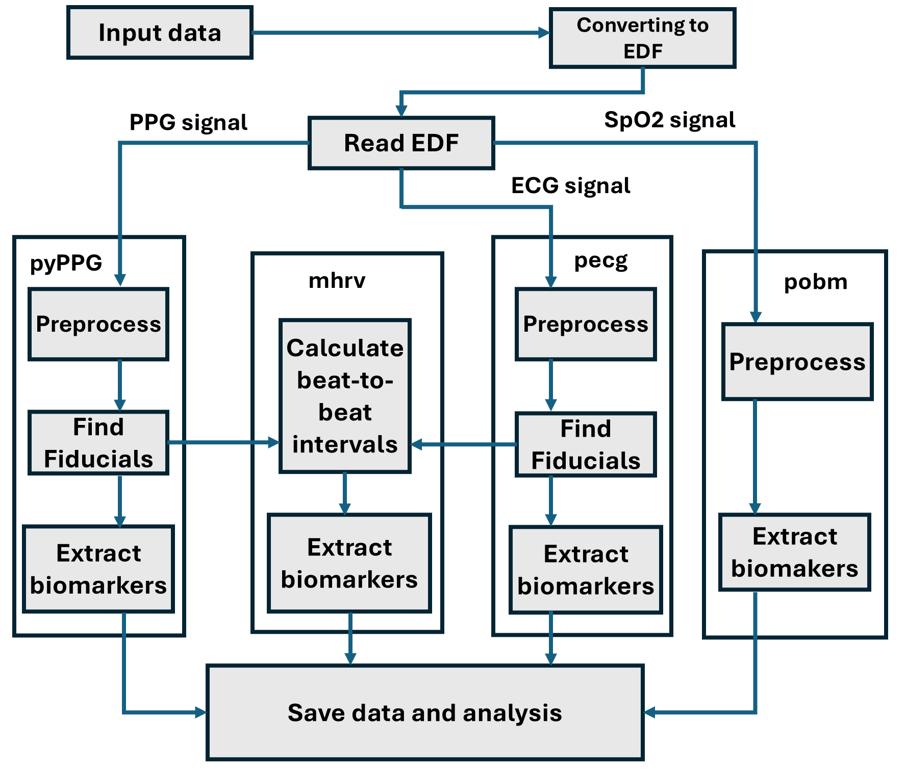

Welcome to pyPSG documentation!
Introduction
Dedicated toolboxes have been developed for the analysis of individual physiological signals. However, for the purpose of fast and efficient data analysis, there was a need to unify these separate modules. To address this gap, pyPSG was developed — a Python-based toolbox capable of handling and analyzing various types of physiological signals within a single environment. The toolbox standardizes the signal processing workflow across data from different sources and also enables the preprocessing of physiological signals for machine learning applications. During development, modularity was a key consideration to allow future expansion with additional biological signals.
Description
Input data, raw signals are first unified in the EDF (European Data Format) structure. The pipeline processes three parallel signal branches: PPG, ECG, and SpO2. Each signal undergoes preprocessing using its corresponding module (pyPPG, pecg, or pobm). In the case of PPG and ECG, fiducial points are detected to derive beat-to-beat intervals, which are then forwarded to the mhrv module for HRV/BRV analysis. Biomarkers are extracted separately from all three signal types, and the results are aggregated and saved for further data analysis.
{kind=link}
Requirements
Python requirements:
Python == 3.10
pecg == 2.0.5
pyPPG == 1.0.73
scipy == 1.9.1
numpy == 1.23.2
pandas == 1.4.4
dotmap == 1.3.30
wfdb == 3.4.0
mne == 1.5.0
System requirements:
To run the ECG wavdet fiducial-points detector matlab runtime (MCR) 2021a is required.
If you wish to use the epltd peak detector additional wfdb toolbox is required.
If you don’t want or can’t install this - It’s Ok! you can use another peak detector from the package.
Installation
Available on pip, with the command: pip install pyPSG-toolbox
pip project:
Matlab runtime installation:
Follow the guidelines provided in the link: https://www.mathworks.com/products/compiler/matlab-runtime.html, and choose the version of 2021a(9.10).